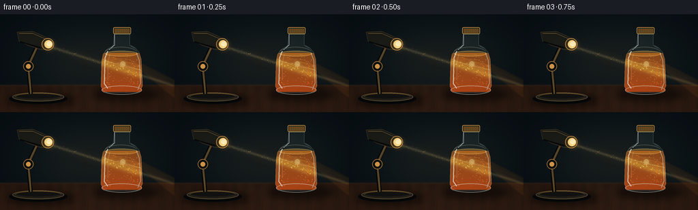
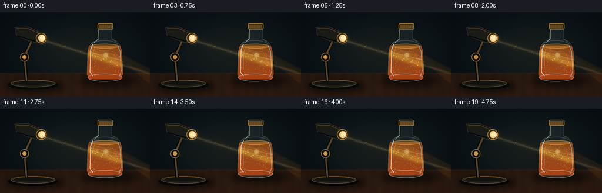
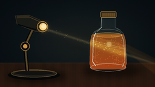

CODING AGENTS AS PIXEL WORLD MODELS
traex/GPT-5.6-Sol · phygen_050
点击播放 · 原生 RGB 像素
逐轮保存的候选
回放视频、检查图与代码变化。
每份候选均可单独播放。实际图片检查记录在下方工具轨迹中。
候选 01播放与检查图
点击播放 · 原生 RGB 像素


展开代码变化
--- 上一保存版本
+++ 本次保存版本
@@ -0,0 +1,216 @@
+from pathlib import Path
+import json, math
+import numpy as np
+from PIL import Image, ImageDraw, ImageFilter
+import artifact_io
+
+ROOT = Path(__file__).resolve().parent
+spec = json.loads((ROOT/'task_spec.json').read_text())
+W,H,N = spec['width'],spec['height'],spec['frames']
+S=4
+w,h=W*S,H*S
+rng=np.random.default_rng(5017)
+
+# fixed natural texture and animation data
+wall_noise=rng.normal(0,1.0,(h,w))
+wood_noise=rng.normal(0,1.0,(h,w))
+particles=[]
+for i in range(94):
+ x=rng.uniform(153,205); y=rng.uniform(58,109)
+ # avoid particles beyond curved shoulders
+ if y<67 and not (157+(67-y)*.7 < x < 201-(67-y)*.7):
+ y=rng.uniform(69,108)
+ particles.append((x,y,rng.uniform(.25,.75),rng.uniform(0,2*math.pi),rng.choice([-1,1])))
+dust=[(rng.uniform(78,147),rng.normal(0,2),rng.uniform(.15,.4),rng.uniform(0,2*math.pi)) for _ in range(24)]
+
+def sc(v): return int(round(v*S))
+def pts(seq): return [(sc(x),sc(y)) for x,y in seq]
+def add_rgba(base, layer): return Image.alpha_composite(base.convert('RGBA'),layer)
+
+def soft_ellipse(box, color, blur=3):
+ lay=Image.new('RGBA',(w,h)); d=ImageDraw.Draw(lay)
+ d.ellipse(tuple(sc(v) for v in box),fill=color)
+ return lay.filter(ImageFilter.GaussianBlur(sc(blur)))
+
+def frame(fi):
+ t=fi/N*2*math.pi
+ yy,xx=np.mgrid[0:h,0:w]; X=xx/S; Y=yy/S
+ # moody blue-charcoal wall, warm pool near the light path
+ vign=np.sqrt(((X-128)/155)**2+((Y-64)/105)**2)
+ warm=np.exp(-(((X-139)/105)**2+((Y-70)/56)**2)*1.3)
+ arr=np.empty((h,w,3),float)
+ arr[:,:,0]=12+11*warm-7*np.clip(vign-.35,0,1)
+ arr[:,:,1]=20+8*warm-8*np.clip(vign-.35,0,1)
+ arr[:,:,2]=25+2*warm-8*np.clip(vign-.35,0,1)
+ arr += wall_noise[:,:,None]*.72
+ # desk plane
+ desk=Y>=104
+ grain=(2.1*np.sin(X*.34+1.2*np.sin(X*.07))+1.0*np.sin(X*1.4)+wood_noise*.55)
+ arr[:,:,0]=np.where(desk,38+grain+(Y-104)*.22,arr[:,:,0])
+ arr[:,:,1]=np.where(desk,24+grain*.42+(Y-104)*.10,arr[:,:,1])
+ arr[:,:,2]=np.where(desk,16+grain*.20+(Y-104)*.05,arr[:,:,2])
+ # faint horizontal edge glimmer
+ arr += np.exp(-((Y-104)/1.5)**2)[:,:,None]*np.array([7,5,3])
+
+ # Lamp beam in air: core and halo on a downward diagonal
+ center=47.2 + .315*(X-72)
+ dist=np.abs(Y-center)
+ gate=1/(1+np.exp(-(X-67)/2.2))*1/(1+np.exp((X-253)/4))
+ # interrupted somewhat by bottle, transmitted region treated brighter later
+ pulse=1+.025*math.sin(t*1.7)
+ halo=np.exp(-(dist/8.0)**2)*gate*7*pulse
+ core=np.exp(-(dist/2.05)**2)*gate*34*pulse
+ pre=(X<151) | (X>205)
+ arr += halo[:,:,None]*np.array([1.0,.69,.30])
+ arr += (core*pre)[:,:,None]*np.array([1.0,.82,.48])
+ arr=np.clip(arr,0,255).astype('uint8')
+ im=Image.fromarray(arr,'RGB').convert('RGBA')
+
+ # Outgoing refracted fan and wall/table caustic projection (behind bottle)
+ proj=Image.new('RGBA',(w,h)); pd=ImageDraw.Draw(proj)
+ # broad transmitted amber fan
+ pd.polygon(pts([(197,75),(208,72),(256,96),(256,124)]),fill=(255,129,28,18))
+ for k in range(9):
+ y0=76+k*2.0+1.3*math.sin(t*.8+k)
+ y1=98+k*2.4+2.3*math.sin(t*.7+k*.9)
+ pd.line(pts([(200,y0),(255,y1)]),fill=(255,171+min(k*4,35),65,24 if k%2 else 40),width=sc(.38 if k%2 else .62))
+ proj=proj.filter(ImageFilter.GaussianBlur(sc(.8)))
+ im=add_rgba(im,proj)
+
+ # soft shadows anchoring objects
+ shadows=Image.new('RGBA',(w,h))
+ sd=ImageDraw.Draw(shadows)
+ sd.ellipse((sc(135),sc(107),sc(234),sc(128)),fill=(0,0,0,120))
+ sd.ellipse((sc(10),sc(116),sc(111),sc(137)),fill=(0,0,0,130))
+ shadows=shadows.filter(ImageFilter.GaussianBlur(sc(5)))
+ im=add_rgba(im,shadows)
+
+ # lamp articulated arm and weighted base
+ lamp=Image.new('RGBA',(w,h)); d=ImageDraw.Draw(lamp)
+ # base concentric metallic ellipses
+ d.ellipse((sc(13),sc(116),sc(99),sc(132)),fill=(5,7,8,235))
+ d.ellipse((sc(18),sc(115),sc(94),sc(128)),fill=(34,31,26,255),outline=(101,84,52,255),width=sc(1))
+ d.ellipse((sc(23),sc(116),sc(89),sc(124)),fill=(18,18,17,255))
+ d.arc((sc(22),sc(116),sc(90),sc(126)),180,350,fill=(179,130,62,150),width=sc(.7))
+ # arm and hinge
+ d.line(pts([(45,117),(41,76),(53,50)]),fill=(5,7,8,255),width=sc(6))
+ d.line(pts([(45,117),(41,76),(53,50)]),fill=(91,73,43,255),width=sc(2.2))
+ d.line(pts([(46,115),(43,76),(55,50)]),fill=(202,148,69,120),width=sc(.55))
+ d.ellipse((sc(34),sc(69),sc(49),sc(84)),fill=(13,14,13,255),outline=(157,116,57,255),width=sc(1))
+ d.ellipse((sc(38),sc(73),sc(45),sc(80)),fill=(207,151,71,255))
+ # tilted lamp shade, dark brass shell facing right
+ shade=pts([(25,26),(48,25),(66,33),(78,44),(73,52),(59,52),(45,47),(28,40)])
+ d.polygon(shade,fill=(27,27,23,255),outline=(144,108,58,255))
+ d.line(pts([(28,28),(48,28),(66,36)]),fill=(194,145,73,155),width=sc(.7))
+ d.line(pts([(29,40),(45,45),(60,49)]),fill=(5,7,7,210),width=sc(2))
+ # bright opening and bulb
+ d.ellipse((sc(61),sc(35),sc(79),sc(53)),fill=(42,34,21,255),outline=(193,143,69,255),width=sc(1))
+ d.ellipse((sc(65),sc(38),sc(77),sc(50)),fill=(255,222,146,255))
+ d.ellipse((sc(68),sc(40),sc(76),sc(47)),fill=(255,251,218,255))
+ im=add_rgba(im,lamp)
+ glow=soft_ellipse((62,35,82,55),(255,190,75,65),4)
+ im=add_rgba(im,glow)
+
+ # animated motes visible in the volumetric beam before bottle
+ mot=Image.new('RGBA',(w,h)); md=ImageDraw.Draw(mot)
+ for x,off,r,ph in dust:
+ cy=47.2+.315*(x-72)+off+math.sin(t+ph)*.4
+ alpha=int(65+50*(.5+.5*math.sin(t*1.2+ph)))
+ md.ellipse((sc(x-r),sc(cy-r),sc(x+r),sc(cy+r)),fill=(255,225,157,alpha))
+ im=add_rgba(im,mot.filter(ImageFilter.GaussianBlur(sc(.12))))
+
+ # Bottle masks
+ silhouette=[(168,26),(190,26),(190,45),(198,49),(204,56),(207,66),(209,105),(206,112),(201,115),(157,115),(151,112),(148,106),(149,69),(151,59),(156,52),(166,46)]
+ bodymask=Image.new('L',(w,h)); bm=ImageDraw.Draw(bodymask)
+ bm.polygon(pts(silhouette),fill=255)
+ bm.ellipse((sc(149),sc(104),sc(208),sc(118)),fill=255)
+ # liquid starts in shoulders, transparent orange gradient + organic density
+ B=np.zeros((h,w,4),dtype=np.uint8)
+ # slightly denser at bottom, and luminous where beam crosses
+ liquid_zone=(Y>=57)&(Y<=114)
+ beam_inside=np.exp(-((Y-center)/5.0)**2)
+ depth=np.clip((Y-56)/58,0,1)
+ B[:,:,0]=np.clip(206+34*beam_inside+12*depth,0,255)
+ B[:,:,1]=np.clip(72+65*beam_inside+18*(1-depth),0,255)
+ B[:,:,2]=np.clip(9+24*beam_inside,0,255)
+ B[:,:,3]=np.where(liquid_zone,154+38*depth+22*beam_inside,0).astype(np.uint8)
+ juice=Image.fromarray(B,'RGBA'); juice.putalpha(Image.composite(juice.getchannel('A'),Image.new('L',(w,h),0),bodymask))
+ im=add_rgba(im,juice)
+
+ # Liquid surface meniscus
+ details=Image.new('RGBA',(w,h)); dd=ImageDraw.Draw(details)
+ dd.ellipse((sc(154),sc(53.7),sc(202),sc(61.8)),fill=(255,153,31,75),outline=(255,206,103,155),width=sc(.65))
+
+ # glowing beam inside bottle, with refraction and multiple light paths
+ phase=t*.72
+ dd.polygon(pts([(149,66),(157,60),(207,75),(208,87),(197,83),(153,72)]),fill=(255,163,42,37))
+ for k in range(8):
+ x0=151; x1=207
+ y0=65.0+k*.8
+ y1=79.0+k*.8 + 2.0*math.sin(phase+k*.72)
+ col=(255,235 if k in (2,5) else 191,110 if k in (2,5) else 52,125 if k in (2,5) else 65)
+ dd.line(pts([(x0,y0),(177,(y0+y1)/2+1.8*math.sin(phase+k)),(x1,y1)]),fill=col,width=sc(.48 if k not in (2,5) else .8))
+ # elegant caustic curls: reflected/refracted streaks
+ for k in range(7):
+ box=(154+k*4.8,65+k*4.0+1.7*math.sin(phase+k),202-k*.9,92+k*2.6)
+ dd.arc(tuple(sc(v) for v in box),190+8*k,338,fill=(255,201+min(k*5,35),94,62+7*(k%2)),width=sc(.55))
+ # bright focused knot
+ dd.ellipse((sc(176),sc(69),sc(184),sc(77)),fill=(255,240,167,110))
+ details.putalpha(Image.composite(details.getchannel('A'),Image.new('L',(w,h),0),bodymask))
+ im=add_rgba(im,details)
+ im=add_rgba(im,soft_ellipse((173,66,188,81),(255,194,62,52),3))
+
+ # Suspended orange pulp, clipped cleanly to bottle
+ pulp=Image.new('RGBA',(w,h)); pu=ImageDraw.Draw(pulp)
+ for j,(px,py,pr,ph,direction) in enumerate(particles):
+ nx=px+math.sin(t*.55+ph)*(.35+pr*.3)
+ ny=py+math.sin(t*.7+ph)*.28 + ((fi*.09*direction+ph)%1.0-.5)*.12
+ # light-facing particles shimmer more
+ bcenter=47.2+.315*(nx-72)
+ near=math.exp(-((ny-bcenter)/7)**2)
+ alpha=int(90+110*near)
+ color=(255,int(150+80*near),int(45+70*near),alpha)
+ pu.ellipse((sc(nx-pr),sc(ny-pr),sc(nx+pr),sc(ny+pr)),fill=color)
+ if near>.4 and j%7==0:
+ pu.line(pts([(nx-.2,ny),(nx+1.5,ny+.4)]),fill=(255,238,168,130),width=max(1,sc(.24)))
+ pulp.putalpha(Image.composite(pulp.getchannel('A'),Image.new('L',(w,h),0),bodymask))
+ im=add_rgba(im,pulp)
+
+ # Glass layer: transparent cool reflections, thick edges, cap and highlights
+ glass=Image.new('RGBA',(w,h)); gd=ImageDraw.Draw(glass)
+ gd.polygon(pts(silhouette),fill=(156,203,208,15),outline=(203,231,226,185))
+ gd.ellipse((sc(149),sc(105),sc(208),sc(118)),outline=(225,240,230,155),width=sc(.8))
+ # side thickness and specular streaks
+ gd.line(pts([(158,54),(154,64),(153,102),(158,109)]),fill=(235,250,242,180),width=sc(1.25))
+ gd.line(pts([(161,58),(158,72),(158,97)]),fill=(255,244,199,95),width=sc(.52))
+ gd.line(pts([(200,57),(204,67),(206,101),(202,111)]),fill=(183,224,221,150),width=sc(1.0))
+ gd.line(pts([(168,29),(168,45),(160,52)]),fill=(239,249,239,170),width=sc(.75))
+ gd.line(pts([(190,31),(190,45),(197,50)]),fill=(160,198,198,100),width=sc(.6))
+ # tiny reflected lamp streak across shoulder
+ gd.arc((sc(153),sc(48),sc(202),sc(67)),188,340,fill=(255,244,200,100),width=sc(.6))
+ # bottle neck rim and cap
+ gd.rounded_rectangle((sc(166),sc(19),sc(192),sc(29)),radius=sc(2),fill=(49,43,31,255),outline=(213,161,78,255),width=sc(.8))
+ gd.rectangle((sc(168),sc(21),sc(190),sc(28)),fill=(97,69,31,255))
+ for cx in np.linspace(170,189,7):
+ gd.line(pts([(cx,21.5),(cx,27.2)]),fill=(226,167,75,145),width=sc(.35))
+ gd.line(pts([(169,29),(191,29)]),fill=(237,214,157,160),width=sc(.7))
+ im=add_rgba(im,glass)
+
+ # Foreground hot pinpricks/refraction sparkles
+ spark=Image.new('RGBA',(w,h)); sp=ImageDraw.Draw(spark)
+ for sx,sy,ph in [(155,68,.2),(203,76,1.7),(181,74,2.2),(160,103,4.1),(203,106,5.1)]:
+ a=int(85+55*(.5+.5*math.sin(t+ph)))
+ sp.line(pts([(sx-1.5,sy),(sx+1.5,sy)]),fill=(255,242,184,a),width=sc(.3))
+ sp.line(pts([(sx,sy-1.5),(sx,sy+1.5)]),fill=(255,242,184,a),width=sc(.3))
+ im=add_rgba(im,spark.filter(ImageFilter.GaussianBlur(sc(.12))))
+
+ # cinematic vignette after compositing
+ rgb=np.asarray(im.convert('RGB')).astype(float)
+ vig=np.clip(1-.22*np.maximum(0,np.sqrt(((X-132)/160)**2+((Y-73)/99)**2)-.47),.72,1)
+ rgb*=vig[:,:,None]
+ out=Image.fromarray(np.clip(rgb,0,255).astype(np.uint8)).resize((W,H),Image.Resampling.LANCZOS)
+ return np.asarray(out,dtype=np.uint8)
+
+frames=np.stack([frame(i) for i in range(N)])
+artifact_io.save(frames,ROOT)
+print('saved',frames.shape,frames.dtype)
可观测工具轨迹
实际执行的命令与返回图片。
命令 1exit 0
/bin/bash -lc "cat prompt.txt && printf '\\n---RULES---\\n' && cat GENERATION_RULES.md && printf '\\n---SPEC---\\n' && cat task_spec.json"
命令 2exit 0
/bin/bash -lc "find . -maxdepth 2 -type f -printf '%p %s bytes\\n' | sort"
命令 3exit 0
/bin/bash -lc 'cat artifact_io.py'
命令 4exit 1
/bin/bash -lc "cat > generate.py <<'PY'
from pathlib import Path
import json, math
import numpy as np
from PIL import Image, ImageDraw, ImageFilter
import artifact_io
ROOT = Path(__file__).resolve().parent
spec = json.loads((ROOT/'task_spec.json').read_text())
W,H,N = spec['width'],spec['height'],spec['frames']
S=4
w,h=W*S,H*S
rng=np.random.default_rng(5017)
# fixed natural texture and animation data
wall_noise=rng.normal(0,1.0,(h,w))
wood_noise=rng.normal(0,1.0,(h,w))
particles=[]
for i in range(94):
x=rng.uniform(153,205); y=rng.uniform(58,109)
# avoid particles beyond curved shoulders
if y<67 and not (157+(67-y)*.7 < x < 201-(67-y)*.7):
y=rng.uniform(69,108)
particles.append((x,y,rng.uniform(.25,.75),rng.uniform(0,2*math.pi),rng.choice([-1,1])))
dust=[(rng.uniform(78,147),rng.normal(0,2),rng.uniform(.15,.4),rng.uniform(0,2*math.pi)) for _ in range(24)]
def sc(v): return int(round(v*S))
def pts(seq): return [(sc(x),sc(y)) for x,y in seq]
def add_rgba(base, layer): return Image.alpha_composite(base.convert('RGBA'),layer)
def soft_ellipse(box, color, blur=3):
lay=Image.new('RGBA',(w,h)); d=ImageDraw.Draw(lay)
d.ellipse(tuple(sc(v) for v in box),fill=color)
return lay.filter(ImageFilter.GaussianBlur(sc(blur)))
def frame(fi):
t=fi/N*2*math.pi
yy,xx=np.mgrid[0:h,0:w]; X=xx/S; Y=yy/S
# moody blue-charcoal wall, warm pool near the light path
vign=np.sqrt(((X-128)/155)**2+((Y-64)/105)**2)
warm=np.exp(-(((X-139)/105)**2+((Y-70)/56)**2)*1.3)
arr=np.empty((h,w,3),float)
arr[:,:,0]=12+11*warm-7*np.clip(vign-.35,0,1)
arr[:,:,1]=20+8*warm-8*np.clip(vign-.35,0,1)
arr[:,:,2]=25+2*warm-8*np.clip(vign-.35,0,1)
arr += wall_noise[:,:,None]*.72
# desk plane
desk=Y>=104
grain=(2.1*np.sin(X*.34+1.2*np.sin(X*.07))+1.0*np.sin(X*1.4)+wood_noise*.55)
arr[:,:,0]=np.where(desk,38+grain+(Y-104)*.22,arr[:,:,0])
arr[:,:,1]=np.where(desk,24+grain*.42+(Y-104)*.10,arr[:,:,1])
arr[:,:,2]=np.where(desk,16+grain*.20+(Y-104)*.05,arr[:,:,2])
# faint horizontal edge glimmer
arr += np.exp(-((Y-104)/1.5)**2)[:,:,None]*np.array([7,5,3])
# Lamp beam in air: core and halo on a downward diagonal
center=47.2 + .315*(X-72)
dist=np.abs(Y-center)
gate=1/(1+np.exp(-(X-67)/2.2))*1/(1+np.exp((X-253)/4))
# interrupted somewhat by bottle, transmitted region treated brighter later
pulse=1+.025*math.sin(t*1.7)
halo=np.exp(-(dist/8.0)**2)*gate*7*pulse
core=np.exp(-(dist/2.05)**2)*gate*34*pulse
pre=(X<151) | (X>205)
arr += halo[:,:,None]*np.array([1.0,.69,.30])
arr += (core*pre)[:,:,None]*np.array([1.0,.82,.48])
arr=np.clip(arr,0,255).astype('uint8')
im=Image.fromarray(arr,'RGB').convert('RGBA')
# Outgoing refracted fan and wall/table caustic projection (behind bottle)
proj=Image.new('RGBA',(w,h)); pd=ImageDraw.Draw(proj)
# broad transmitted amber fan
pd.polygon(pts([(197,75),(208,72),(256,96),(256,124)]),fill=(255,129,28,18))
for k in range(9):
y0=76+k*2.0+1.3*math.sin(t*.8+k)
y1=98+k*2.4+2.3*math.sin(t*.7+k*.9)
pd.line(pts([(200,y0),(255,y1)]),fill=(255,171+min(k*4,35),65,24 if k%2 else 40),width=sc(.38 if k%2 else .62))
proj=proj.filter(ImageFilter.GaussianBlur(sc(.8)))
im=add_rgba(im,proj)
# soft shadows anchoring objects
shadows=Image.new('RGBA',(w,h))
sd=ImageDraw.Draw(shadows)
sd.ellipse((sc(135),sc(107),sc(234),sc(128)),fill=(0,0,0,120))
sd.ellipse((sc(10),sc(116),sc(111),sc(137)),fill=(0,0,0,130))
shadows=shadows.filter(ImageFilter.GaussianBlur(sc(5)))
im=add_rgba(im,shadows)
# lamp articulated arm and weighted base
lamp=Image.new('RGBA',(w,h)); d=ImageDraw.Draw(lamp)
# base concentric metallic ellipses
d.ellipse((sc(13),sc(116),sc(99),sc(132)),fill=(5,7,8,235))
d.ellipse((sc(18),sc(115),sc(94),sc(128)),fill=(34,31,26,255),outline=(101,84,52,255),width=sc(1))
d.ellipse((sc(23),sc(116),sc(89),sc(124)),fill=(18,18,17,255))
d.arc((sc(22),sc(116),sc(90),sc(126)),180,350,fill=(179,130,62,150),width=sc(.7))
# arm and hinge
d.line(pts([(45,117),(41,76),(53,50)]),fill=(5,7,8,255),width=sc(6))
d.line(pts([(45,117),(41,76),(53,50)]),fill=(91,73,43,255),width=sc(2.2))
d.line(pts([(46,115),(43,76),(55,50)]),fill=(202,148,69,120),width=sc(.55))
d.ellipse((sc(34),sc(69),sc(49),sc(84)),fill=(13,14,13,255),outline=(157,116,57,255),width=sc(1))
d.ellipse((sc(38),sc(73),sc(45),sc(80)),fill=(207,151,71,255))
# tilted lamp shade, dark brass shell facing right
shade=pts([(25,26),(48,25),(66,33),(78,44),(73,52),(59,52),(45,47),(28,40)])
d.polygon(shade,fill=(27,27,23,255),outline=(144,108,58,255))
d.line(pts([(28,28),(48,28),(66,36)]),fill=(194,145,73,155),width=sc(.7))
d.line(pts([(29,40),(45,45),(60,49)]),fill=(5,7,7,210),width=sc(2))
# bright opening and bulb
d.ellipse((sc(61),sc(35),sc(79),sc(53)),fill=(42,34,21,255),outline=(193,143,69,255),width=sc(1))
d.ellipse((sc(65),sc(38),sc(77),sc(50)),fill=(255,222,146,255))
d.ellipse((sc(68),sc(40),sc(76),sc(47)),fill=(255,251,218,255))
im=add_rgba(im,lamp)
glow=soft_ellipse((62,35,82,55),(255,190,75,65),4)
im=add_rgba(im,glow)
# animated motes visible in the volumetric beam before bottle
mot=Image.new('RGBA',(w,h)); md=ImageDraw.Draw(mot)
for x,off,r,ph in dust:
cy=47.2+.315*(x-72)+off+math.sin(t+ph)*.4
alpha=int(65+50*(.5+.5*math.sin(t*1.2+ph)))
md.ellipse((sc(x-r),sc(cy-r),sc(x+r),sc(cy+r)),fill=(255,225,157,alpha))
im=add_rgba(im,mot.filter(ImageFilter.GaussianBlur(sc(.12))))
# Bottle masks
silhouette=[(168,26),(190,26),(190,45),(198,49),(204,56),(207,66),(209,105),(206,112),(201,115),(157,115),(151,112),(148,106),(149,69),(151,59),(156,52),(166,46)]
bodymask=Image.new('L',(w,h)); bm=ImageDraw.Draw(bodymask)
bm.polygon(pts(silhouette),fill=255)
bm.ellipse((sc(149),sc(104),sc(208),sc(118)),fill=255)
# liquid starts in shoulders, transparent orange gradient + organic density
B=np.zeros((h,w,4),dtype=np.uint8)
# slightly denser at bottom, and luminous where beam crosses
liquid_zone=(Y>=57)&(Y<=114)
beam_inside=np.exp(-((Y-center)/5.0)**2)
depth=np.clip((Y-56)/58,0,1)
B[:,:,0]=np.clip(206+34*beam_inside+12*depth,0,255)
B[:,:,1]=np.clip(72+65*beam_inside+18*(1-depth),0,255)
B[:,:,2]=np.clip(9+24*beam_inside,0,255)
B[:,:,3]=np.where(liquid_zone,154+38*depth+22*beam_inside,0).astype(np.uint8)
juice=Image.fromarray(B,'RGBA'); juice.putalpha(Image.composite(juice.getchannel('A'),Image.new('L',(w,h),0),bodymask))
im=add_rgba(im,juice)
# Liquid surface meniscus
details=Image.new('RGBA',(w,h)); dd=ImageDraw.Draw(details)
dd.ellipse((sc(154),sc(53.7),sc(202),sc(61.8)),fill=(255,153,31,75),outline=(255,206,103,155),width=sc(.65))
# glowing beam inside bottle, with refraction and multiple light paths
phase=t*.72
dd.polygon(pts([(149,66),(157,60),(207,75),(208,87),(197,83),(153,72)]),fill=(255,163,42,37))
for k in range(8):
x0=151; x1=207
y0=65.0+k*.8
y1=79.0+k*.8 + 2.0*math.sin(phase+k*.72)
col=(255,235 if k in (2,5) else 191,110 if k in (2,5) else 52,125 if k in (2,5) else 65)
dd.line(pts([(x0,y0),(177,(y0+y1)/2+1.8*math.sin(phase+k)),(x1,y1)]),fill=col,width=sc(.48 if k not in (2,5) else .8))
# elegant caustic curls: reflected/refracted streaks
for k in range(7):
box=(155+k*5.7,65+k*4.0+1.7*math.sin(phase+k),198-k*2.0,92+k*2.6)
dd.arc(tuple(sc(v) for v in box),190+8*k,338,fill=(255,201+min(k*5,35),94,62+7*(k%2)),width=sc(.55))
# bright focused knot
dd.ellipse((sc(176),sc(69),sc(184),sc(77)),fill=(255,240,167,110))
details.putalpha(Image.composite(details.getchannel('A'),Image.new('L',(w,h),0),bodymask))
im=add_rgba(im,details)
im=add_rgba(im,soft_ellipse((173,66,188,81),(255,194,62,52),3))
# Suspended orange pulp, clipped cleanly to bottle
pulp=Image.new('RGBA',(w,h)); pu=ImageDraw.Draw(pulp)
for j,(px,py,pr,ph,direction) in enumerate(particles):
nx=px+math.sin(t*.55+ph)*(.35+pr*.3)
ny=py+math.sin(t*.7+ph)*.28 + ((fi*.09*direction+ph)%1.0-.5)*.12
# light-facing particles shimmer more
bcenter=47.2+.315*(nx-72)
near=math.exp(-((ny-bcenter)/7)**2)
alpha=int(90+110*near)
color=(255,int(150+80*near),int(45+70*near),alpha)
pu.ellipse((sc(nx-pr),sc(ny-pr),sc(nx+pr),sc(ny+pr)),fill=color)
if near>.4 and j%7==0:
pu.line(pts([(nx-.2,ny),(nx+1.5,ny+.4)]),fill=(255,238,168,130),width=max(1,sc(.24)))
pulp.putalpha(Image.composite(pulp.getchannel('A'),Image.new('L',(w,h),0),bodymask))
im=add_rgba(im,pulp)
# Glass layer: transparent cool reflections, thick edges, cap and highlights
glass=Image.new('RGBA',(w,h)); gd=ImageDraw.Draw(glass)
gd.polygon(pts(silhouette),fill=(156,203,208,15),outline=(203,231,226,185))
gd.ellipse((sc(149),sc(105),sc(208),sc(118)),outline=(225,240,230,155),width=sc(.8))
# side thickness and specular streaks
gd.line(pts([(158,54),(154,64),(153,102),(158,109)]),fill=(235,250,242,180),width=sc(1.25))
gd.line(pts([(161,58),(158,72),(158,97)]),fill=(255,244,199,95),width=sc(.52))
gd.line(pts([(200,57),(204,67),(206,101),(202,111)]),fill=(183,224,221,150),width=sc(1.0))
gd.line(pts([(168,29),(168,45),(160,52)]),fill=(239,249,239,170),width=sc(.75))
gd.line(pts([(190,31),(190,45),(197,50)]),fill=(160,198,198,100),width=sc(.6))
# tiny reflected lamp streak across shoulder
gd.arc((sc(153),sc(48),sc(202),sc(67)),188,340,fill=(255,244,200,100),width=sc(.6))
# bottle neck rim and cap
gd.rounded_rectangle((sc(166),sc(19),sc(192),sc(29)),radius=sc(2),fill=(49,43,31,255),outline=(213,161,78,255),width=sc(.8))
gd.rectangle((sc(168),sc(21),sc(190),sc(28)),fill=(97,69,31,255))
for cx in np.linspace(170,189,7):
gd.line(pts([(cx,21.5),(cx,27.2)]),fill=(226,167,75,145),width=sc(.35))
gd.line(pts([(169,29),(191,29)]),fill=(237,214,157,160),width=sc(.7))
im=add_rgba(im,glass)
# Foreground hot pinpricks/refraction sparkles
spark=Image.new('RGBA',(w,h)); sp=ImageDraw.Draw(spark)
for sx,sy,ph in [(155,68,.2),(203,76,1.7),(181,74,2.2),(160,103,4.1),(203,106,5.1)]:
a=int(85+55*(.5+.5*math.sin(t+ph)))
sp.line(pts([(sx-1.5,sy),(sx+1.5,sy)]),fill=(255,242,184,a),width=sc(.3))
sp.line(pts([(sx,sy-1.5),(sx,sy+1.5)]),fill=(255,242,184,a),width=sc(.3))
im=add_rgba(im,spark.filter(ImageFilter.GaussianBlur(sc(.12))))
# cinematic vignette after compositing
rgb=np.asarray(im.convert('RGB')).astype(float)
vig=np.clip(1-.22*np.maximum(0,np.sqrt(((X-132)/160)**2+((Y-73)/99)**2)-.47),.72,1)
rgb*=vig[:,:,None]
out=Image.fromarray(np.clip(rgb,0,255).astype(np.uint8)).resize((W,H),Image.Resampling.LANCZOS)
return np.asarray(out,dtype=np.uint8)
frames=np.stack([frame(i) for i in range(N)])
artifact_io.save(frames,ROOT)
print('saved',frames.shape,frames.dtype)
PY
python generate.py"命令 5exit 0
/bin/bash -lc "python - <<'PY' p='generate.py' s=open(p).read().replace(\"box=(155+k*5.7,65+k*4.0+1.7*math.sin(phase+k),198-k*2.0,92+k*2.6)\",\"box=(154+k*4.8,65+k*4.0+1.7*math.sin(phase+k),202-k*.9,92+k*2.6)\") open(p,'w').write(s) PY python generate.py"
命令 6exit 0
/bin/bash -lc "python - <<'PY'
from pathlib import Path
import numpy as np
z=np.load('pixels.npz')['pixels']
print('pixels',z.shape,z.dtype,'range',z.min(),z.max())
fs=sorted(Path('frames').glob('*.png'))
print('frames',len(fs),'artifact bytes',Path('pixels.npz').stat().st_size,'html',Path('index.html').stat().st_size)
# frame-to-frame changed RGB pixels from packed tensor
print('changed pixels/frame', [int(np.count_nonzero(z[:,:,i]"'!=z[:,:,i-1])) for i in range(1,z.shape[2])])
PY'视觉工具实际返回图片 1

视觉工具实际返回图片 2

保存候选 1 份；完成命令 6 次；可验证图片返回 2 张。原始 API 响应与完整日志保留在本地。